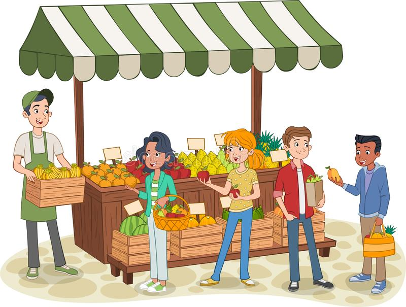

| 🌼 Lesson — Iba't Ibang Estruktura ng Pamilihan |

Ano ang Estruktura ng Pamilihan?
Ang estruktura ng pamilihan ay tumutukoy sa kung paano nakaayos ang ugnayan ng mga konsyumer at prodyuser sa isang ekonomiya. Ipinapakita nito kung gaano karaming sellers ang nagkokontrol ng presyo, kalidad, at dami ng produkto sa merkado.
1. Ganap na Kompetisyon (Perfect Competition)
- Maraming maliliit na sellers at buyers.
- Pare-pareho ang produkto (walang kaibahan).
- Walang may kontrol sa presyo dahil nakabase ito sa demand at supply.
- Madaling pumasok at lumabas sa pamilihan.
2. Monopolyo (Monopoly)
- Iisang prodyuser lang ang nagbebenta ng produkto.
- Siya ang may full control sa presyo at supply.
- Mahirap pasukin ng bagong negosyo dahil sa legal at teknikal na hadlang.
- Halimbawa: Meralco sa kuryente, tubig concessionaires.
3. Monopolistikong Kompetisyon (Monopolistic Competition)
- Maraming sellers pero may kaibahan ang kanilang produkto (flavor, design, packaging).
- May bahagyang kontrol sa presyo dahil sa uniqueness ng produkto.
- Ginagamit ang branding at advertising para makahikayat ng mamimili.
- Halimbawa: milk tea shops, clothing brands, fast food chains.
4. Oligopolyo (Oligopoly)
- Ilang malalaking kompanya lang ang nagkokontrol sa buong merkado.
- Kapag tumaas ang presyo ng isa, susunod ang iba upang hindi malugi.
- Madalas may “price war” o marketing competition.
- Halimbawa: telcos (Globe, Smart), softdrinks (Coke vs Pepsi).
5. Kartel
- Grupo ng mga kompanya na nagkakasundo sa presyo at supply.
- Layunin nilang kontrolin ang merkado para tumaas ang kita.
- Ilegal ito sa maraming bansa dahil nakakasama sa mga konsyumer.
- Halimbawa: oil cartel (OPEC) sa pandaigdigang merkado.
Bakit Mahalaga ang Pag-unawa sa Estruktura ng Pamilihan?
- Natutulungan ang mamimili na maintindihan kung bakit iba-iba ang presyo ng produkto.
- Naiintindihan ng prodyuser kung paano makikipagsabayan sa kompetisyon.
- Nakatutulong sa pamahalaan na gumawa ng batas laban sa pandaraya o pang-aabuso sa merkado.